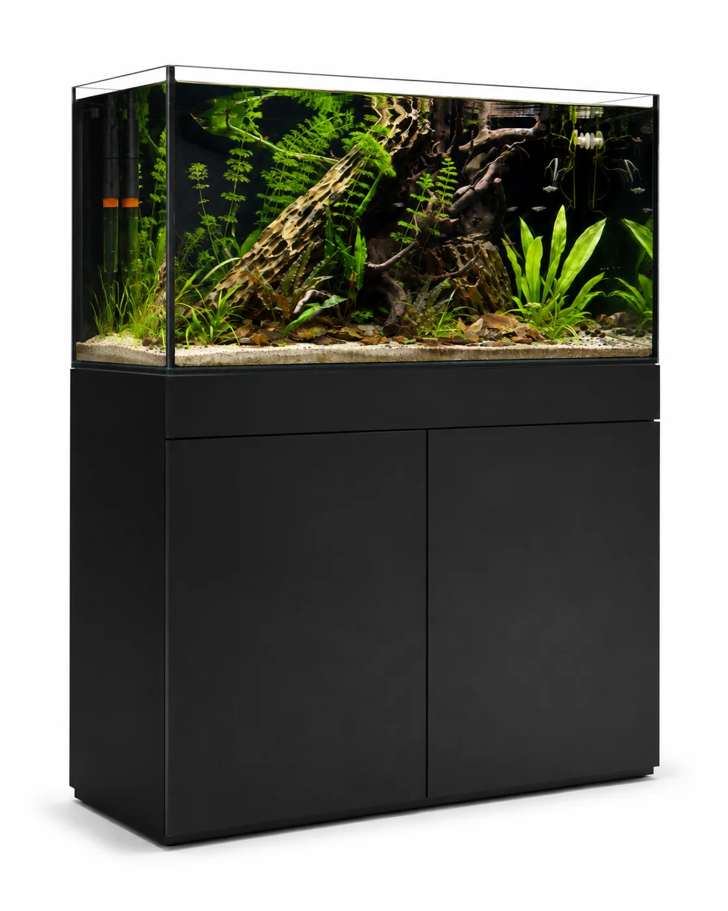

حوض جاهز
تصفّح صور الأحواض الجاهزة، واقرأ تفاصيل كل حوض لتعرف تكوينه وما يتضمنه.
استكشف الأحواض الجاهزةعن أكوا هافن

يبدأ المشهد بحوض. ثم تلتقي النباتات والضوء، وتجد الصخور والأخشاب مكانها. في أكوا هافن، يمكنك استكشاف هذه التفاصيل معًا: من الزجاج والتجهيزات إلى النباتات ومستلزمات العناية.
استكشف المجموعةفكرتك، من البداية
لا تحتاج الأفكار إلى البداية نفسها. اختر مدخلك إلى المجموعة، ثم اقترب مما يهمك.
تصفّح صور الأحواض الجاهزة، واقرأ تفاصيل كل حوض لتعرف تكوينه وما يتضمنه.
استكشف الأحواض الجاهزةابدأ بالأحواض الفارغة، ثم تعرّف إلى النباتات والصخور والأخشاب والتجهيزات المتاحة في المجموعة.
استكشف الأحواض الفارغةاستعرض الإضاءات والفلاتر والمضخات وأدوات الصيانة. راجع تفاصيل المنتج لمعرفة مقاساته وخياراته، إن وجدت.
استكشف المعدات
من المشهد إلى التفاصيل
قطعة زجاج.
ورقة خضراء.
وبداية عالم.
الأحواض والتجهيزات تشكّل الإطار. والنباتات والصخور والأخشاب تمنحك تفاصيل تستكشف بها فكرتك.
ابحث عن بدايتكمن فكرة إلى تصور
في مصمم الأحواض يمكنك تغيير الطول والعرض والارتفاع، ومشاهدة تغير التصور أمامك. جرّب نوع الزجاج والإضاءة والفلتر والنباتات، ثم احفظ مسودة لتعود إليها في المتصفح نفسه.
جرّب مصمم الأحواضهذه نسخة لمعاينة التصميم. صور المجموعة وبياناتها من لقطة عامة لأكوا هافن بتاريخ ٥ نوفمبر ٢٠٢٦؛ الأسعار والتوفر غير متزامنين. المصمم يقدم تصورًا وتقديرًا توضيحيين، ولا ينفذ هذا الموقع طلبات أو مدفوعات.